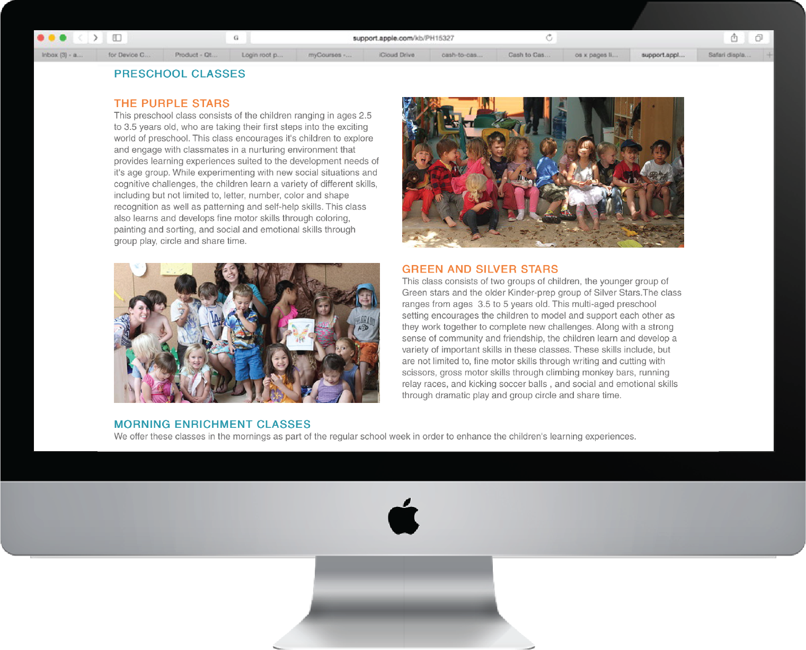

Little Village Website Design - UI/UX Project
The Little Village at Atwater Commons is a preschool in Los Angeles. I helped re-design a version of their website, incorporating a more fun and organized layout.


The Little Village at Atwater Commons is a preschool in Los Angeles. I helped re-design a version of their website, incorporating a more fun and organized layout.